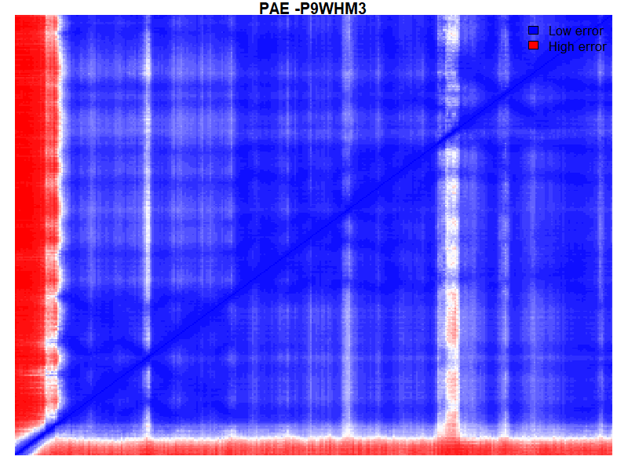

Rv2964 - P9WHM3 (pim: 100.00 )
Label format: [chain]:[wildtype][pos][mutant](pLDDT,mean PAE, proportion of PAE<5)
Network details
Model validation

| PAE Mean |
PAE Prop
Under 5 |
PAE Max |
pDLLT Mean |
pDLLT Prop
Over 90 |
pDLLT Prop
Over 70
|
| 6.3 |
64.1% |
31 |
93.6 |
86.1% |
8.7% |